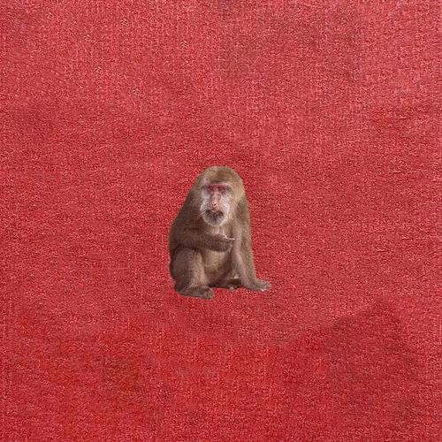

简介
歌词
专辑简介
刘森个人第二张专辑《峨眉》
歌词
歌词内容待更新...
创作者说
这是《峨眉》页面的首版结构，保持了华北浪革专辑页的布局与交互方式。
你后续可直接替换封面、补充 MP3 与 LRC，并继续完善简介与创作说明。

刘森个人第二张专辑《峨眉》
歌词内容待更新...
这是《峨眉》页面的首版结构，保持了华北浪革专辑页的布局与交互方式。
你后续可直接替换封面、补充 MP3 与 LRC，并继续完善简介与创作说明。